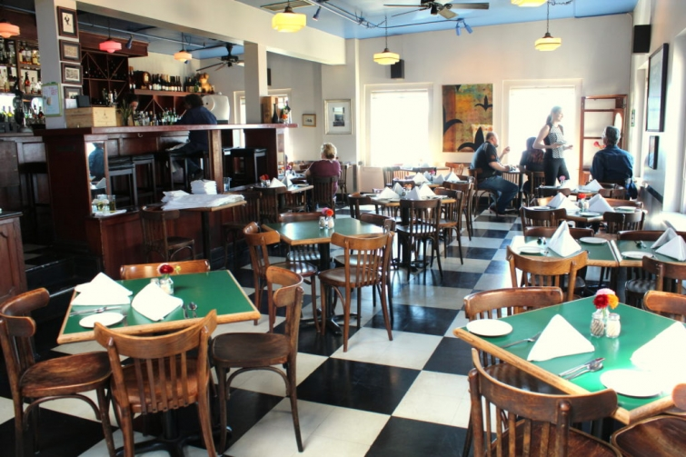

.png)
.PNG)
.PNG)
.PNG)
.PNG)
.PNG)
.JPG)
.JPG)
.PNG)
.PNG)


I’ve not been playing hooky for a week. Instead, I have been having MAJOR tech problems with the blog. So major I had to hire some help from an internet security company. (If you need website protection, talk to the kind folks at Wordfence. They are professional, efficient, and patient with people like me who know nothing about computers.) Besides those problems, I was also getting so much comment spam coming through that I had to remove the option for leaving comments on posts that are more than 5 days old. But hallelujah I think we have everything back to normal now! So let’s travel today. 🙂
When we first started planning our trip to visit our son, I thought we would spend each night at his apartment in Bellevue (right outside of Seattle) and we’d spend our days exploring nearby areas. As we got further into the planning and into conversations with him, it became apparent that plan was not the best one. There were too many places to see that were too far away to be day trips. So the plan changed. We actually ended up making somewhat of a roadtrip out of our time there – mostly on the Olympic Peninsula, but we did manage to see a bit of Seattle on our first and last days of the trip. So today, I want to share a bit of Seattle with you.
Where was the very first place this Southern girl wanted to visit after we were picked up at the airport? Pike Place Market of course! 🙂 I could have stayed there all day just looking at the buckets full of those gorgeous flowers! (and the fish, and the produce, and…well…everything else!)
But I didn’t. 🙂 We went to lunch at Place Pigalle, a charming restaurant right behind the market (not an easy one to find though.) Thank you for the recommendation Karen!
You can take a look at the menu.
 These were truly the views from the windows by our little table.
These were truly the views from the windows by our little table.
We could not have had a better view. 🙂Our son ordered the duck confit.
I had a beet salad that was delicious,
and my husband had the roasted chipotle chicken sandwich.
After lunch we explored the streets around the market.
Lots of colorful produce stalls lined the walks.
I hopped over a block or two to visit the smaller Watson Kennedy shop at the Inn at the Market.
They only allowed one photograph inside.
(Yes, I obeyed the rules. 🙁 )
Then I walked back over to the market where my son and husband were enjoying some interesting drinks at Rachel’s Ginger Beer.
Emily over at Jones Design Co. had recommended Beecher’s cheese to me, but we were still too full from lunch to try any. I’ll try it on our next trip there.
We did check out THE original Starbucks.
When we finished shopping at the market, we drove back to our son’s apartment, dropped off our luggage, and then drove a bit to Chism Beach Park there in Bellevue. It had lovely trails…
and a nice waterfront area.
From there we headed over to Gasworks Park on Lake Union in Wallingford.
Here’s your history lesson for today:
“This 20 acre point on Lake Union was cleared in 1906 to construct a plant to manufacture gas from coal – later converted to crude oil. Import of natural gas in the 1950’s made the plant obsolete. The city acquired the site for a park in 1962. The park was opened to the public in 1975. The boiler house has been converted to a picnic shelter with tables, fire grills and an open area. The former exhauster-compressor building, now a children’s play barn, features a maze of brightly painted machinery.” (from here.)
People were relaxing everywhere. There were picnics, kites, bicycles. It was most definitely a laid back vibe, and I loved it. 🙂
After walking around the park a bit, we headed back to our son’s apartment to play a video game (truly!) and then it was time for dinner. Our son’s pick for the evening was 8 Oz. in Ballard.
They had many interesting burgers on the menu.And SHAKES!
yum…
Of course I just had to check out the espresso- oreo one!
(It didn’t last long. 🙂 )
Sweet potato tots were our shared appetizer.
My husband said this was his favorite meal of the entire trip. All of our burgers were very good (but I had a different favorite meal I’ll share with you later.) The pickles really make the burgers at 8 Oz. to me., and the garlic fries were great.
And that was our first day in Seattle. I will have more tourist-y things from the city on the last day of our trip, but we had to get to bed early that night. We wanted to catch an early ferry the next morning so that we could have breakfast on Bainbridge Island. So stay tuned for an amazing bakery and some charming shops on Bainbridge coming up next.
Until next time…


.PNG)
thanks for sharing your wonderful pictures. I use to live in the area (Poulsbo WA) so made me a little envious.
I will be in Seattle next week and I can’t wait to explore some of the same sites.
Hi Kelly! I’m glad that your computer problems are solved! And thank you so much for sharing your trip! There are a lot of travelling in the air these days at Talk of the House, isn’t it? 🙂 I can’t wait to discover the next posts! And these sweet potatoes tots look yummy! I’ve never tried it yet but I’m already looking online for a recipe!
xoxo
CLaire
I so enjoy your travel posts…it’s almost like being there. Thanks for sharing your travels and special places with all of us.
We visited Seattle several years ago for a business conference followed by an Alaskan cruise. It was HOT in Seattle which was unusual. I could not believe the flower market. I sure wish we had those here and it was fun watching the fish throwing. Looks like you found some mighty good food again.
Hi Kelly! Your trip sounds amazing! We enjoyed a trip there years ago but would love to go back. Can’t wait to hear about the test of the trip! And can’t computers be annoying!😊
Aren’t computer problems the worst?! I love Seattle. We haven’t been in years, but, the market was a favorite, and we had a picnic at Mt Ranier which was beautiful. Enjoy your son and can’t wait to hear more!
Glad you had the opportunity to visit Seattle and all the tourist places. How did you like that floating bridge as you traveled to Bellevue? I hope you were able to view Mt. Rainier as you landed into Seattle, pretty amazing. Possibly you where able to take a day hike up to Paradise which is Heaven here on earth. So as a hiker it sounds as if you are one your way to Hurricane Ridge and the Hoh Rainforest on the Olympic Pennisula, for a differen kind of “moss experience.” If your husband likes to hike he will definitely becoming back to experience the North Cascades when he has a chance. Ask your son to sleuth out the opportunity to take a ferry and bike through the charming little harbor towns in the San Juans Island. Very different coastal living from the East coast beach life. Enjoy time with family.
Great post. My two sons live in Redmond and I have three brothers in that area, too. I love Seattle and now I have a few new places to visit next time I go there! Thanks!
Kelly, this post brought back a lot of memories. My brother got married in Centralia, Washington 27 years ago. It was August and we were so amazed with the weather…it was August and we had left the hot, humid south to find perfection….sunny, warm and NOT humid. A few ladies at the reception were complaining about the heat…..we secretly rolled our eyes…they have no idea. We stayed out there a week driving up the coast, visiting Buchart Gardens and riding the ferry around the Soloman Islands(not sure if I spelled either of those right) The huge baskets of beautiful flowers were everywhere and it was very charming. My dear sister-in-law says we hit the jackpot as far as the weather was concerned…she says to have 7 days with no rain is very uncommon and that it can be very dreary and chilly in the summer. We left with great memories and I know you will too.
Glad you got your tech problems solved!
Welcome to Seattle, this is my hometown and you hit a great time of year to come.
Love travel posts! Makes me feel like I went with you! I look forward to the rest!
I saw you had posted today, but…..
I have been obsessed the last few days watching the D.C Eagle cams from the American Eagle Foundation. I don’t know why I can’t pull myself away, but I simply can’t! I highly recommend it to teachers for the classroom. Seems the kids really enjoy it.
Back to the Eagles!
Oh…another trip…yippee! Love these…only problem, I get hungry after reading! All that great food….goes well with the history lessons! 😉
YOUR TRIP REPORTS ARE THE BEST 🙂
Yea! Another trip we get to follow along! 🙂 Looks fabulous so far. Beautiful views, great shopping and delicious food…haha, and of course your son, sounds perfect!
And my sister lives in Ballard!
I live on Bainbridge Island – can’t wait to read that part of your travel stories!
Grrrrreat post! I always said you would make a good travel agent. Thanks for sharing your trip. Can’t wait to see more. I have a friend that will be going to Seattle in July. I will definitely share this with her. At least I can travel vicariously through my friends!
I love your travel posts (well, I love ALL your posts!;)the scenery, the menus etc. I typically eat my lunch while reading your posts and today as I was looking at all that gorgeous restaurant food, I wondered,”What does Kelly eat for lunch at home on a normal day?”. Care to share?:).
What a fun trip! I have wanted to visit Seattle since I read Katie’s post, “Seeing Seattle” at numbersandnails.com. All of your food looks fabulous! Did you go to the Seattle Antiques Market? I can’t wait to see your next post. I love it when you have titles like “Day 1” which implies there is more to come!
Kelly,
What a fun trip so far. I’m happy you were able to visit Place Pigalle. I will definitely try 8 Oz. next time we visit.
Can’t wait to hear about the rest of the trip.
xo,
Karen
Kelly,
I understand technical difficulties. My laptop has been with an it guy for two weeks due to a virus. I am back now and loving your Seattle trip. Thanks for sharing it with us. Those burgers look amazing but the view you had at the first restaurant looks spectacular. Keep it coming, girl!
I miss my Seattle home. But enjoying all that I can while living here in SoCal. Enjoy your time!!!
Thanks for this! We’ve been considering a trip to Seattle, and your photos provide a better sense of its atmosphere than do the guide books and online photos I’ve perused. Seattle will have to wait until next year (this year: Boston), but you’re helping me to prepare. Happy travels! 🙂
Visited Seattle area when my niece and her husband were stationed at Whidbey Island – several years ago. Would love to go back again. Loved all those neat little towns surrounding the area. Thanks for sharing.
I have not been to Seattle in quite some time. It is such a great walking city (if the weather cooperates). I am anxious to hear about the rest of your trip!!
Hi Kelly – Like you, whenever I have computer problems a phone call for help is in order. Love the pics and hate to admit this, but I actually considered moving to Seattle just so I could shop at Pike Place Market! Your burger stop looked amazing. BTW, in an early post some months ago, folks were talking about the movie The Holiday, and I had to admit I’d never watched it. Well, that is now off my list….and I loved it. Looking forward to more pics from the State of Washington.
What a great post! I haven’t been to Seattle in years and you sure made me want to visit again! And it’s only 7:45a.m. here and you really made me hungry!:) Hope you had a wonderful time with your son and may all your computer issues be long gone.
Talk about a feast for the senses. Looks like you and your husband are having a fun start to retirement. I bet your son loves Seattle. It looks gorgeous. My third daughter was just mentioning yesterday that she’d love a Momma/daughter trip there. I am not the greatest air passenger but a flight such as that is more doable than flying to Europe every summer as our eldest daughter does. Love the picture you took at the park and I’m with your husband… finishing with a burger…… my kind of day!
You’re in my hometown! ENJOY – I’m excited to say I will be there myself in a couple weeks – the American Association of Family and Consumer Sciences national conference is in Bellevue. It is going to be very weird to stay in a hotel in a town where I used to be a kid…but even more exciting is the weekend at Cannon Beach OR prior. Hope you made it to the coast, it is breathtaking.
Hi Kelly it’s so much fun waking up to a post from you. Nice to get away from all your techy problems and visit family in another side of the country, and best of all we get to tag along for the ride, a great way to start them day!
Hi Kelly
It sounds as though you had a wonderful day in Seattle. I have a poster of Pike Market, purchased on our honeymoon, but not in Seattle, in Savannah!I went through all these posters in a framing shop, and chose it for the lovely colours. It is still not in a frame, and it was purchased 26 years ago! I may just have to pull it out and get it up on the wall.
Hi Kelly, good to hear from you and I’m glad that your absence was only caused by “techy” problems. I can imagine how irritating they were for you though.
I never imagined that Seattle was such a lovely city …another place to add to my ever growing list! 🙂 your meals look delicious …thanks for sharing the pictures and I love how you always include the menus too.
I’ve read about Bainbridge Island so really looking forward to hearing all about your visit there.
Take care and have a good week.
Rosemary
Ooh. Love the menus and delicious details about the food. And the photo of people enjoying the park (and sun!). Can’t wait to read more.